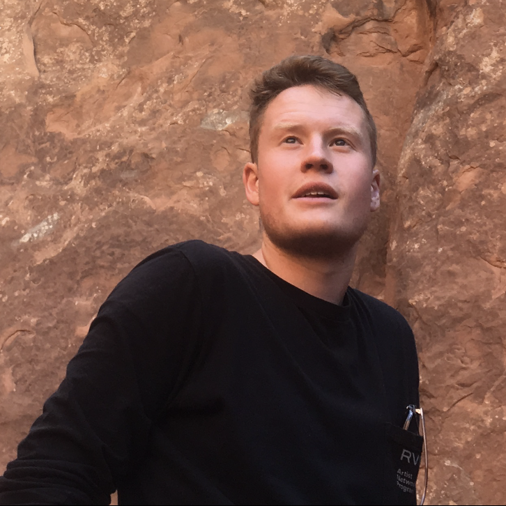

<main class="page-content" aria-label="Content">
  <div class="wrapper">
    <div class="home">
      <div style="width: 100%; display: table;">
      <div style="display: table-row;">
        <div style="width:67%; display: table-cell; vertical-align:top">
          <p>
            I'm a Ph.D. student in the 
            <a href="https://www.ese.upenn.edu/">Department of Electrical and Systems Engineering</a> 
            at the 
            <a href="https://www.upenn.edu/">University of Pennsylvania</a>
            , where I am affilliated with the
            <a href="https://www.grasp.upenn.edu/">GRASP (General Robotics, Automation, Sensing and Perception) Lab</a>
            and the
            <a href="https://warrencenter.upenn.edu/">Warren Center for Network and Data Sciences</a>.
            I'm fortunate to be co-advised by 
            <a href="https://www.seas.upenn.edu/~hassani/">Hamed Hassani</a>
            and 
            <a href="https://www.georgejpappas.org/">George J. Pappas</a>.
            Previously, I completed my undergraduate studies at Swarthmore College, 
            where I double-majored in Engineering and Mathematics.
          </p>
        </div>
        <div style="width:33%; display: table-cell">
          <p></p>
        </div>
      </div>
      </div>
    </div>
  </div>
</main>